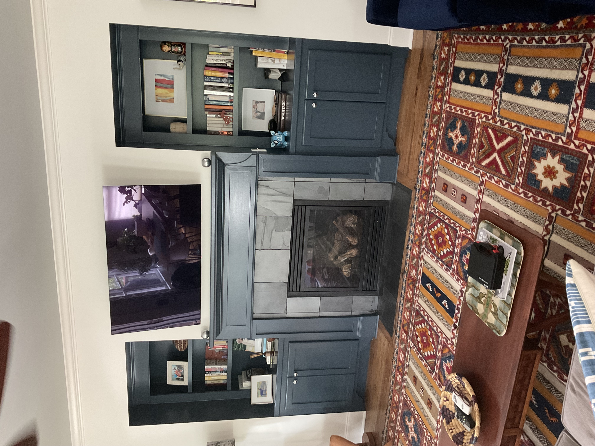
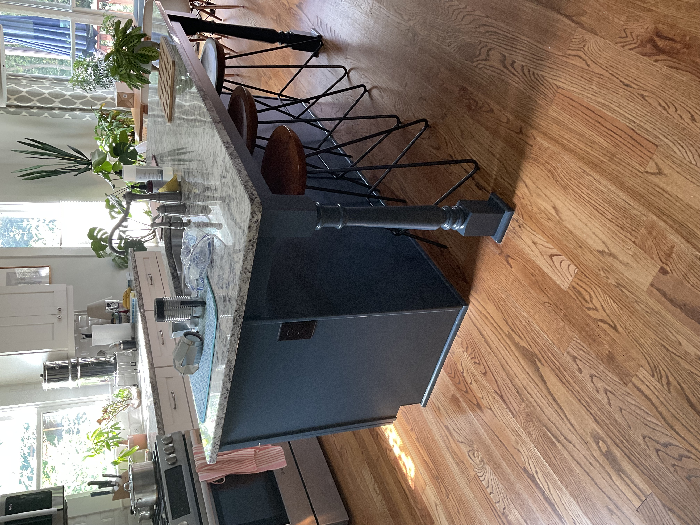
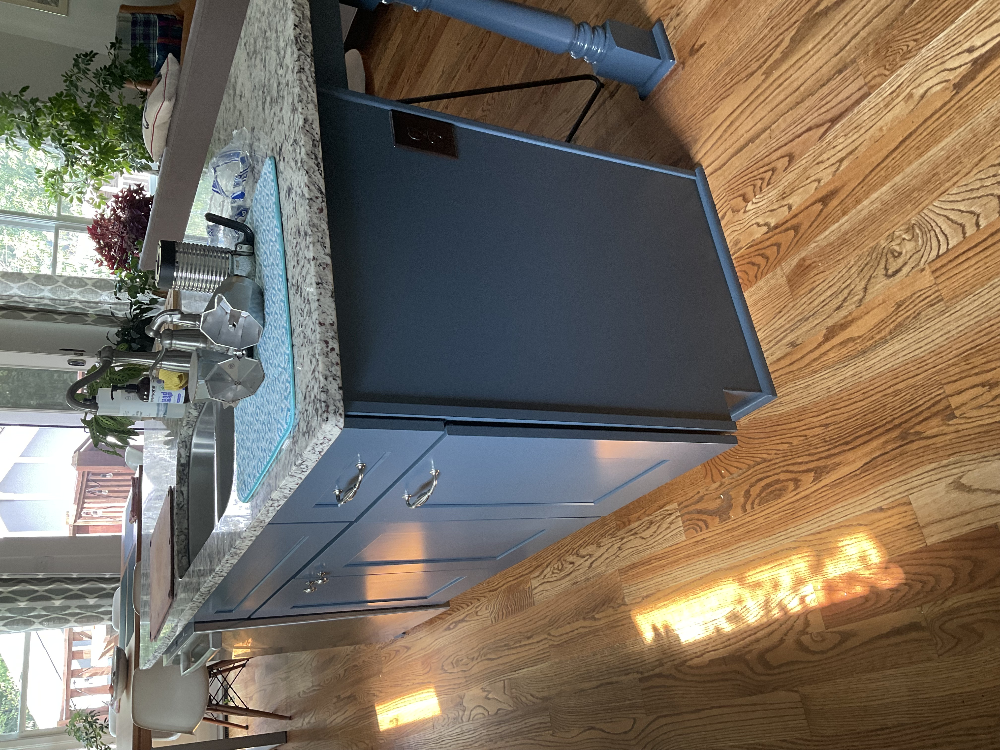
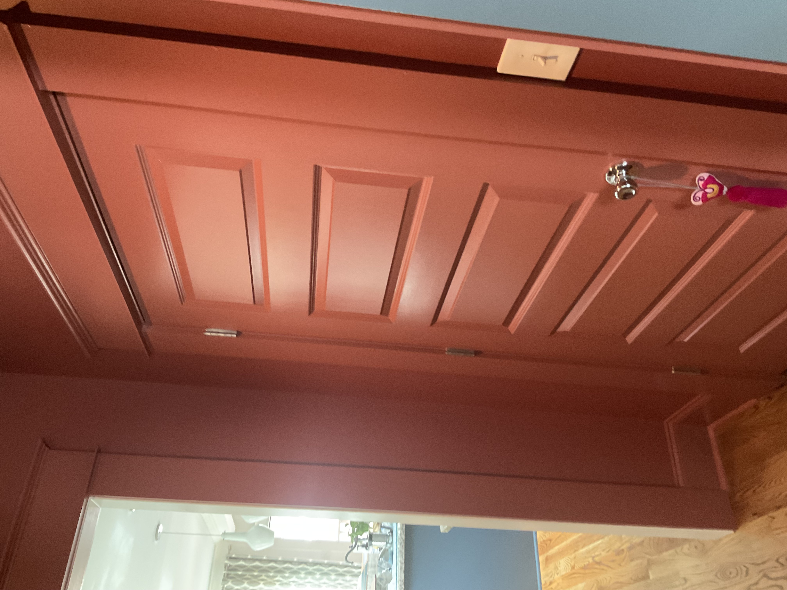
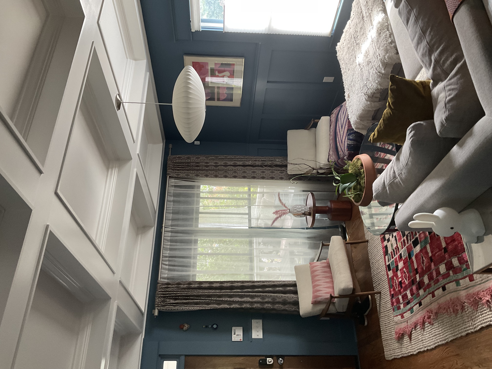

Light Carpentry Repairs
Clean, precise repairs that make your home look its best before — and after — every paint job.
Get a Free EstimateWhat We Do
From patching trim and fixing baseboards to repairing door frames and replacing rotted wood, our team handles the small carpentry work that makes a big difference in the finished result.
Our Work






Why Choose Us
- Trim & Baseboard Repair — We fix gaps, cracks, and damaged sections so surfaces are paint-ready.
- Door & Window Frame Touch-ups — Restore frames to a clean, flush finish before painting.
- Rotted Wood Replacement — We identify and swap out damaged wood to prevent further deterioration.
- Seamless Finish — Repairs are blended and primed so paint adheres evenly across the entire surface.